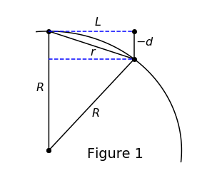

We discussed the name of the new method. We discussed the convergence plots and eigenvalue plots of all three methods so far. We discussed the posters for SIAM CSE19.
- Sage's Tasks
- For Poster
- Code
- Writing
- Sage's List
- Hermite RBF-FD
- Meeting Followup
- References
Sage's Tasks
For Poster
- Solutions on a Torus
- MLS on tangent-plane
Code
Account for the hessian to fix the code for the RBF Symmetric OGr method.- Implement time-stepping.
- Test surface diffusion methods on a torus.
- Become familiar with Varun's repo.
Writing
- Write Radial Basis Function Article
- Write the theorem for exactness.
- Write RBF-FD article.
- Write RBF-FD Projection Method article.
- Write RBF-OGr article.
- Add local approximation to RBF Interpolation article.
Sage's List
- Pick some test problems to solve on surfaces. I suggest
- Diffusion of sum of Gaussians
- Diffusion on torus
- Implement local OGRr method for surfaces
- Use exact normals
- Generate convergence results on the test problems from 1.
- Examine eigenvalues of the discrete Laplace-Beltrami operator.
- Implement Shankar-Wright RBF-FD method using RBF+polynomials (in $\RR^3$)
- Use exact normals
- Generate convergence results on the test problems from 1.
- Examine eigenvalues of the discrete Laplace-Beltrami operator.
- Implement RBF-FD tangent-plane method using RBF+polynomials (in $\RR^2$)
- Use exact normals
- Generate convergence results on the test problems from 1.
- Examine eigenvalues of the discrete Laplace-Beltrami operator.
- Implement moving least squares (MLS) method on tangent-plane using polynomials (in $\RR^2$)
- Use exact normals
- Generate convergence results on the test problems from 1.
- Examine eigenvalues of the discrete Laplace-Beltrami operator.
- Create poster with results from 2-4
- Include 5 if time permits.
Hermite RBF-FD
There has been some doubt as to whether the method we have been calling Symmetric Orthogonal Gradients is actually the method that Dr. Pirét developed based on her High-Order Orthogonal Gradients method and RBF-FD techniques. If it is not the case that it is her method, then we will name it the Hermite RBF-FD method.
Meeting Followup
Error Regarding $\frac{\partial^2 f}{\partial \vec{n}^2}$
In the meeting I relayed the information that Grady and had learned from stack exchange that
$$
\vec{n}\cdot \nabla(\vec{n} \cdot \nabla f) \neq \vec{n}^TH(f)\vec{n}.
$$
This was in fact untrue. They are equal and the notation is not ambiguous:
$$
\frac{\partial^2 f}{\partial \vec{n}^2} = \vec{n}\cdot \nabla(\vec{n} \cdot \nabla f) = \vec{n}^TH(f)\vec{n}.
$$
Proof:
Let $\vec{n} = \begin{bmatrix} a & b &c \end{bmatrix}^T$ be a unit normal vector of a surface in $\RR^3$. First we show that $\vec{n}\cdot \nabla\vec{n} = \vec{n}^T\nabla\vec{n} = \vec{0}^T$. Consider that \begin{align*} 1 &= a^2 + b^2 + c^2 \\ 0 &= 2a a_x + 2b b_x + 2c c_x \\ 0 &= \vec{n} \cdot \vec{n}_x \\ \text{ and similarly } & \\ 0 &= \vec{n} \cdot \vec{n}_y \\ 0 &= \vec{n} \cdot \vec{n}_z \\ \text{ which together imply }& \\ \begin{bmatrix} 0 & 0 & 0 \end{bmatrix} &= \vec{n}^T \nabla \vec{n}. \end{align*} Then we have that \begin{align*} \vec{n} \cdot \nabla f &= af_x + b f_y + c f_z \\ \nabla( \vec{n} \cdot \nabla f) &= \begin{bmatrix} af_{xx} + b f_{xy} + c f_{xz} \\ af_{xy} + b f_{yy} + c f_{yz} \\ af_{xz} + b f_{yz} + c f_{zz} \end{bmatrix} + \begin{bmatrix} a_x f_x + b_x f_y + c_x f_z \\ a_y f_x + b_y f_y + c_y f_z \\ a_z f_x + b_z f_y + c_z f_z \end{bmatrix} \\ &= H(f)\vec{n} + (\nabla\vec{n} \nabla f) \\ \vec{n} \cdot \nabla( \vec{n} \cdot \nabla f) &= \vec{n}^T H(f) \vec{n} + \vec{n} \cdot (\nabla\vec{n} \nabla f) \\ &= \vec{n}^T H(f) \vec{n} + \underbrace{\vec{n}^T \nabla\vec{n}}_{\vec{0}^T} \nabla f \\ &= \vec{n}^T H(f) \vec{n} \end{align*}
$\blacksquare$
Hermite RBf-FD Failures
In my inital tests, the PHS RBFs were failing to approximate the derivative. The first limitation is that $\phi_4(r)$ must be defined at $r=0$ which limits us to degree 9 and higher. Uppon further examination I found that the method was failing for all odd powers of PHS. This is due to the pecular fact that $\phi, \vec{n}\cdot\nabla\phi, \vec{n}^TH(\phi)\vec{n}$ are linearly dependent on the sphere for $\phi(r) = r^{2k+1}$.
Proof:
Let $d = \vec{n} \cdot (\vec{x}-\vec{x}_0)$ where $\vec{x}_0$ is the stencil center. Note that $d$ is negative since we orient the normal outward. We have that
\begin{align*}
\phi(r) &= r^{2k+1} \\
\vec{n}\cdot\nabla\phi (r) &= d \phi_1(r) = d (2k+1)r^{2k-1} \\
\vec{n}^TH(\phi)\vec{n}(r) &= \phi_1(r) + d^2 \phi_2(r) = (2k+1)r^{2k-1} + d^2(4k^2-1)r^{2k-3}.
\end{align*}

We will show that $d = -\frac{r^2}{2R}$ which will cause all three functions to be linear multiples of $r^{2k+1}$.
Let $R$ be the radius of the sphere and $r = ||\vec{x} - \vec{x}_0||$. Let $L^2 = r^2 - d^2$, and we have values for the diagram in Figure 1 (technically $d$ is negative, but the magnitudes are all correct).
Then we have that
\begin{align*}
R^2 &= (R+d)^2 + L^2 \\
&= R^2 + 2Rd + d^2 + L^2 \\
0 &= 2Rd + r^2 \\
d &= \frac{r^2}{-2R}.
\end{align*}
$\blacksquare$
The sphere is not the only case in which Hermite RBF-FD fails. In fact for the plane, we have that $\vec{n}\cdot (\vec{x} - \vec{x}_0) = 0$ which imlies that $\vec{n}\cdot\nabla \phi = 0$ for any $\phi$.
Schur Complement Error
I have tested my code for the Schur complement soution to the block matrix system that commonly arrises. I had naively inverted $P^TA^{-1}P$ which is necessarily singular if $P$ is rank deficient. I am instead now using the Moore-Penrose inverse and the results are slightly different in some of the test cases. It appears that $P^TA^{-1}P$ has a large condition number, but that is numerically invertable. I susspect that the choice of the multiquadric RBF may have lead to the apparant artificial stability. This may explain why the eigenvalue plots of the gaussian were so strange. I have deleted the saved weight matrices. All previous data should be reconfirmed.
References